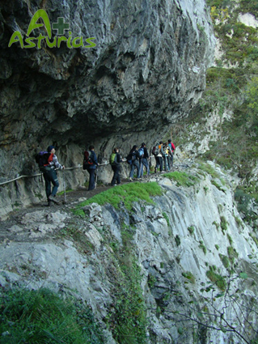

Geschichte, Natur, Traditionen … sind Hautmerkmale dieser Route im Herzen Asturiens.

Proaza:
- Paca und Tola: zwei Braunbären, die halbwild leben, sind die Stars der Gegend.
- Das Bärenhaus.
- Mittelalterlicher Turm: Torre del Campo.
Teverga:
- Der Themenpark zur Vorgeschichte ist ein origineller Schauplatz zur Veranschaulichung der Kultur der Menschen im späten Paläolithikum.
- Stiftskirchevon on San Pedro de Teverga, ein wertvolles Werk im romanischen Baustil, wo die Mumien von dem Grafen von Valdercarzana zu sehen sind.
- Die Höhle Huerta.
Quirós:
- Das Etnographische Museum von Quirós und Umgebung.
- Die Eibe von Bermiego, die unter Naturdenkmalschutz steht.
- Die “horreos” von Quirós und ihren Legenden. Die “horreos” sind traditionelle Speidcher für Getreide, Obst und Kartoffeln. Zum Schutz vor Nagetieren stehen sie auf Stelzen.
- Die Mühlen von Corroriu.

Ort Trail